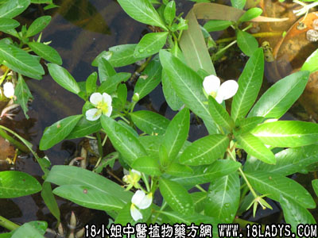

过塘蛇(中药材植物名:水龙)(植物科目:唇形科)

别名：过塘标、蚕茧草。
植物名：水龙。
生长环境：本品为浮水或匍匐状光滑无毛的草本。为生生草本，常生于浅水池中或沟渠中。
分布：我国南方广布，广州附近常见。
入药部分：全草。
采集期：夏、秋最多，全年有产。
自采地点：池塘、水涌。
性味：性凉、味淡。
功能：清热解毒。
主治、用量和用法：1、癍痧发热：干用5钱至1两，清水煎服；2、生蛇：生干可用，煎水洗患处；3、天泡疮：用法同上；4、热毒大疮：生用适量，加片糖捣烂，外敷患处。
（方歌）清热解毒过塘蛇，热毒泡疮与痈疡，飞蛇缠住人身上，煎水洗熏效更良。
本文解释权归中药大全，本文地址：https://www.daquan.com/post/1554.html